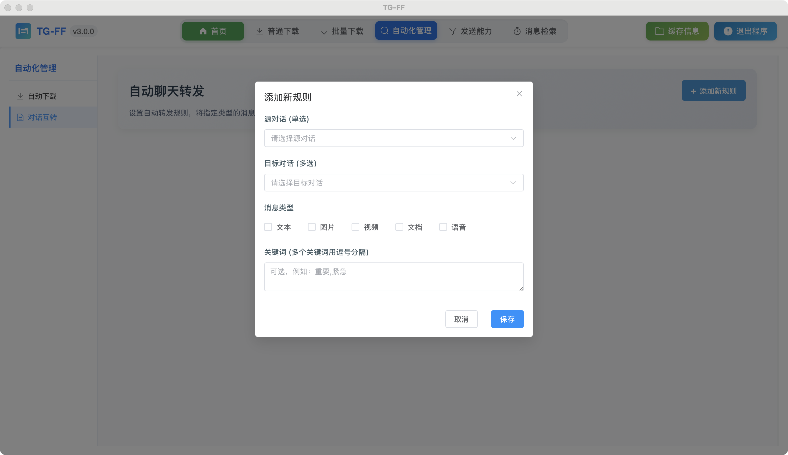
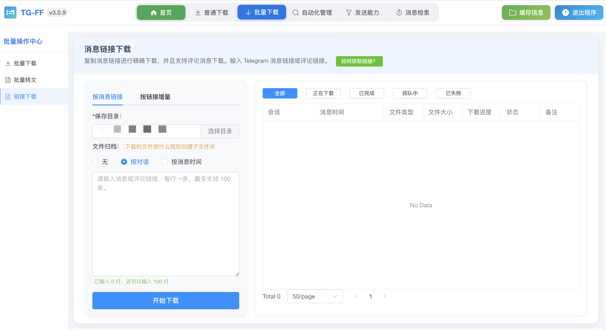

TG-FF V3 用户手册¶
版本更新说明¶
TG-FF V3 版本是一次重大升级，对软件进行了全面优化和功能扩展。新版本重新组织了模块功能，现在主要划分为8个核心功能模块，使操作更加直观高效。
核心功能模块¶
1. 普通下载¶

功能说明：普通下载功能允许您选中左边的对话列表，选中后右边会显示该对话的所有聊天资源，然后可以点击直接下载。下载时需要设置保存目录，也可选择时间进行筛选查询。
主要特点： - 选择对话查看所有媒体资源 - 支持单个或批量选择下载 - 时间筛选查询功能 - 支持下载显示灰色图标的媒体文件
2. 批量下载¶
功能说明：批量下载将对历史消息进行下载，符合设置条件的历史消息，且消息中包含有图片或者视频，将进行下载。
主要特点： - 大规模批量下载历史消息中的媒体文件 - 支持多种筛选条件（关键词、时间范围等） - 支持设置高级下载参数
注意：批量下载不记录进度，每次启动将进行新的下载，在任务没有完成之前，需谨慎停止。
3. 批量转文¶

功能说明：选择图片，能将图片批量转换docx文档，一键转换，快速发布。选择图片并输入文字，将自动生成DOCX文档，完美兼容知乎、头条、公众号、小红书、百家号等主流自媒体平台，无需二次排版，直接导入即可发布。
主要特点： - 图文混排自动生成 - 支持多种自媒体平台排版风格 - 一键生成DOCX文档
注意：发布内容时请遵守各平台规范，谨慎选择媒体内容以避免违规。图片将根据内容智能插入到文本中，形成专业的排版效果。
4. 消息转发¶

功能说明：当源对话收到消息后，自动转发到目标对话，实现对话间的消息同步。
主要特点： - 实时监听消息并自动转发 - 支持消息类型筛选 - 关键词和发送者筛选 - 高级转发模式设置
5. 自动下载¶

功能说明：自动下载将对新的消息进行监听，一旦收到符合设置条件的新消息，且消息中包含有图片或者视频，将进行自动下载。
主要特点： - 实时监听新消息并自动下载媒体内容 - 多种筛选条件（媒体类型、关键词、发送者等） - 自动分类和通知设置
6. 文本发送¶

功能说明：将准备好的文本转发到指定的对话，可以设置转发频率，转发规则。
主要特点： - 文本批量自动发送 - 自定义发送间隔和顺序 - 支持多种发送模式和格式
7. 资源发送¶
功能说明：添加文件目录，对文件夹下的资源进行转发。如果同时添加文本，每发送一条资源文件，同时顺序获取一条文本内容作为标题发送。
主要特点： - 本地媒体资源批量发送 - 支持文本与媒体混合发送 - 多种文件格式支持：png、jpg、jpeg、mp4
8. 信息检索¶

功能说明：灵活选择对话，关键词、时间等筛选条件，能快速检索想要的信息。
主要特点： - 强大的全文搜索功能 - 多种筛选条件组合 - 搜索结果导出功能 - 详细的消息上下文查看
9. 消息链接下载¶

功能说明：通过复制Telegram消息链接或评论链接，实现定向下载特定消息中的媒体资源。支持批量处理多个链接，自动识别并下载链接中的图片、视频等媒体文件。
主要特点： - 支持普通消息链接和评论链接 - 批量处理多个链接 - 自动识别链接中的媒体资源 - 支持评论中的媒体文件下载 - 智能分类保存下载内容
使用步骤： 1. 复制需要下载的Telegram消息链接或评论链接 2. 在TG-FF中粘贴链接（支持多个链接） 3. 设置保存目录 4. 点击开始下载
注意：确保您有权限访问这些消息，且消息未被删除。私密群组/频道的链接需要您是该群组/频道的成员才能下载。
重要提示¶
-
账号安全：TG-FF使用官方API与您的Telegram账号连接，所有认证过程在本地完成，不会收集或存储您的账号凭证。
-
网络要求：使用TG-FF需要能够连接Telegram服务器的网络环境，在某些地区可能需要设置代理。
-
资源占用：某些功能（如批量下载、自动下载等）长时间运行可能会占用一定的系统资源，建议在性能良好的设备上使用。
-
存储空间：下载大量媒体文件可能占用较大存储空间，请确保有足够的可用磁盘空间。
-
内容合规：使用TG-FF时，请遵守当地法律法规和Telegram的服务条款，不要处理或分发违规内容。
系统要求¶
- Windows: Windows 10/11 (64位)
- macOS: macOS 11.0+ (包括Intel芯片和Apple Silicon M系列芯片)
- 网络: 稳定的互联网连接，可能需要代理设置
- 存储: 至少1GB可用空间用于软件安装及资源缓存
获取帮助¶
如果您在使用过程中遇到问题，可以通过以下渠道获取帮助：